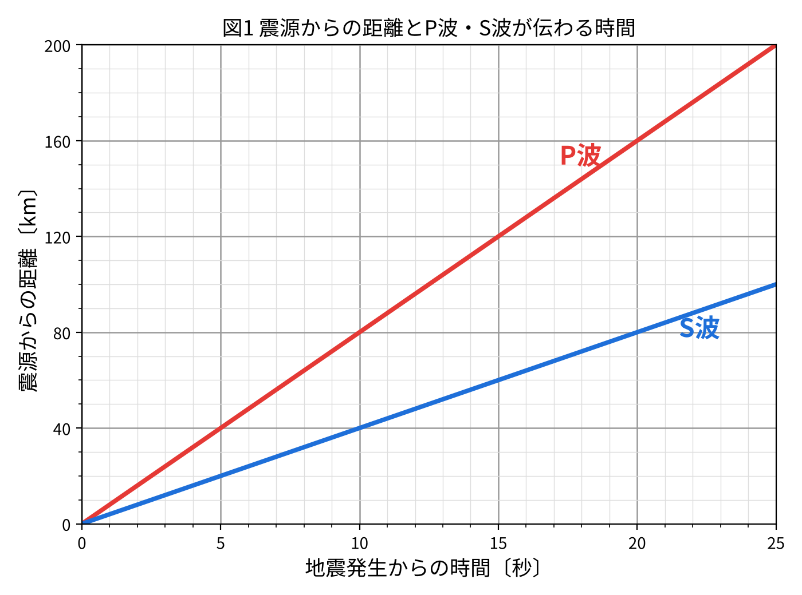

1地震の計算問題①(比例の利用)
📖 江原予備校テキスト より
例題1:観測地Aの震源距離80km・初期微動継続時間10秒。
✏️ 確認問題
問1観測地Aは震源から80kmで初期微動継続時間は10秒。震源から160kmのB地点の初期微動継続時間は何秒か。
正解はウ。初期微動継続時間は震源距離に比例。80:160=10:x → x=20秒。
2地震の計算問題②(例題2)
📖 江原予備校テキスト より
例題2:図1は、ある地震について、震源からの距離とP波・S波が伝わる時間との関係を表したものである。各問いに答えよ。

図1 震源からの距離とP波・S波が伝わる時間
✏️ 確認問題
問1(1) P波が伝わる速さは何km/秒か。(図1を読む)
正解はウ。図1より、P波は10秒で80km進むので、80km÷10秒=8.0km/秒です。
問2(2) 震源から80kmの地点の初期微動継続時間は何秒か。(図1で、40km地点のP波とS波の時間差は5秒)
正解はイ。40:5=80:x → x=10秒。
問3(3) 初期微動継続時間が15秒の観測地点の震源距離は何kmか。
正解はウ。40:5=y:15 → 5y=600 → y=120km。
問4(4) A観測地でP波が10時10分32秒、S波が10時10分40秒に観測された。震源での地震発生時刻はいつか。
正解はイ。初期微動継続時間は8秒。40:5=z:8 → z=64km。P波が64kmを進む時間は64÷8=8秒。32秒の8秒前で10時10分24秒です。